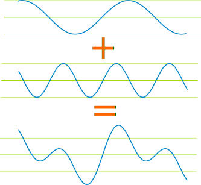
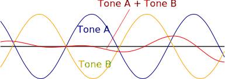
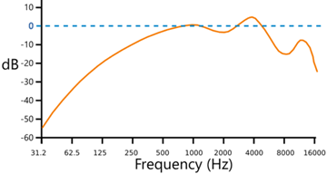

Audio Spectrum and Beats
Have a play with one, two or three tones at once.
(Note: below 20 Hz is called Infrasound, and above 20,000 Hz is Ultrasound.)
Beats
Start with one tone.
Now add a second tone and bring it close to the first tone.
You will notice "beats" as the two sounds interfere with each. Try for example 400 and 402.
Also try things like 800 and 402 etc.
You can add a third tone for fun, and make weird sci-fi sounds.
Why
Because the waves interact to create a new more complex wave.
Here we see how two waves (in this case of very different frequencies) make a new wave:

Now let's see what happens when the tones are really close in frequency.
They will sometimes be "in sync" and make a bigger wave when added together:

Or they can be "out of sync" and cancel each other out:

And we hear that change as beats.
Have a play with this graph (drag it left and right) to see it better: Beats Graph.
Note about what we can hear
We can't hear all tones. We are most sensitive to sounds between 1,000 and 4,000 Hz. The sounds played here are not an accurate hearing test though!

A Typical
"Equal Loudness" Curve
(dB and Loudness explained next!)